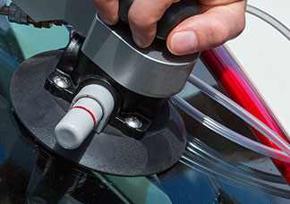
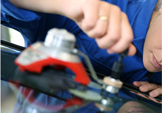
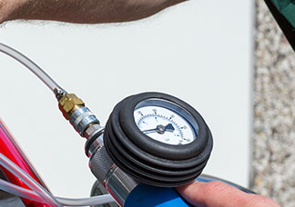
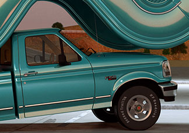
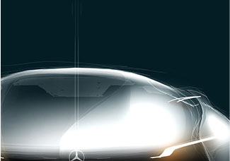

Ремонт стекла
Своевременный ремонт стекол останавливает дальнейший роста трещин и позволит избежать неприятных сюрпризов в дороге. Каждый автомобилист должен знать, что повреждения стекол, подлежащие ремонту, делятся на микроповреждения, сколы и трещины. В соответствии с этими разрушениями специалистами bitstop будет осуществлен качественный и быстрый ремонт стекол.
Ремонту подлежат 3 вида дефектов:
Со временем стекло теряет прозрачность. Не имея видимых дефектов, оно перестает четко отражать обстановку на дороге. Вы чувствуете дискомфорт при управлении транспортом в туман, непогоду, сумерки. Это происходит из-за микроцарапин, мелких щербинок, потертостей на поверхности стекла. Они удерживают влагу и пыль, в результате чего видимость становится хуже.
Каким бы качественным ни был автомобиль, спустя 150 000 км пробега стекла начнут искажать изображение. Чтобы устранить повреждения мастера Bitstop проводят полировку с помощью специальных паст и шлифовальной машинки.
Полировка позволяет снять въевшийся в стекла налет, удалить царапинки, возвратить прозрачность. Качество результата напрямую зависит от мастерства специалиста. Шлифовка — достаточно сложный процесс: велик риск появления линзового эффекта и волн на поверхности стекла. Поэтому в Bitstop процедуру проводят специально обученные, опытные специалисты.
Своевременный ремонт стекол останавливает дальнейший роста трещин и позволит избежать неприятных сюрпризов в дороге. Каждый автомобилист должен знать, что повреждения стекол, подлежащие ремонту, делятся на микроповреждения, сколы и трещины. В соответствии с этими разрушениями специалистами bitstop будет осуществлен качественный и быстрый ремонт стекол.
Своевременный ремонт стекол останавливает дальнейший роста трещин и позволит избежать неприятных сюрпризов в дороге. Каждый автомобилист должен знать, что повреждения стекол, подлежащие ремонту, делятся на микроповреждения, сколы и трещины. В соответствии с этими разрушениями специалистами bitstop будет осуществлен качественный и быстрый ремонт стекол.
Ремонт стекла в bitstop
- Длительность ремонта
от 20 мин до 1 часа - Высококвалифицированные специалисты
- Материалы, разработанные специально для нашего климата
Процесс ремонта стекла в bitstop
-

В самом начале, трещина очищается от грязи и пыли при помощи салфеток и специальных моющих средств. При этом мастер обрабатывает поверхность так, чтобы влага не попадала в структуру трещины.
-

После этого трещина, под воздействием давления, заполняется специальным полимером. Он обладает схожими оптическими свойствами, что и стекло. Это позволяет восстановить прозрачность. В зависимости от типа повреждения, мастер выбирает разный по плотности полимер. Обычно эта процедура занимает 2-3 минуты.
-

Далее при помощи вакуума высасывается оставшийся в трещине воздух. Чередование давления и вакуума (циклический режим) может повторяться несколько раз, чтобы полимер полностью заполнил повреждение. Количество циклов может варьироваться и выбирается в зависимости от типа повреждения. К примеру, круглый скол имеет больше воздушных включений, поэтому циклический режим для работы с таким сколом повторяется 5-6 раз.
-
Затем место повреждения заклеивается светонепроницаемой пленкой и обрабатывается ультрафиолетовым излучателем. После этой процедуры полимер застывает и крепко склеивает треснувшие слои.
-

В завершении своей работы мастер убирает защитную пленку и при помощи лезвия удаляет излишки полимера с рабочей поверхности. Чтобы не было видно следов от острого лезвия, мастер строго перпендикулярно и под одним и тем же углом, а так же в одном направлении срезает излишки вещества.
-

Далее осуществляется полировка поверхности при помощи специальной полироли, чтобы придать эффект блеска и сделать поврежденный участок практически не заметным. После этого машина готова вернуться к своему владельцу!
-
Если вы хотите записаться
на ремонт
или у вас
есть вопросы: -
Позвоните нам
8-800-333-88-80
Заказать звонок -
или Напишите
заполнить форму